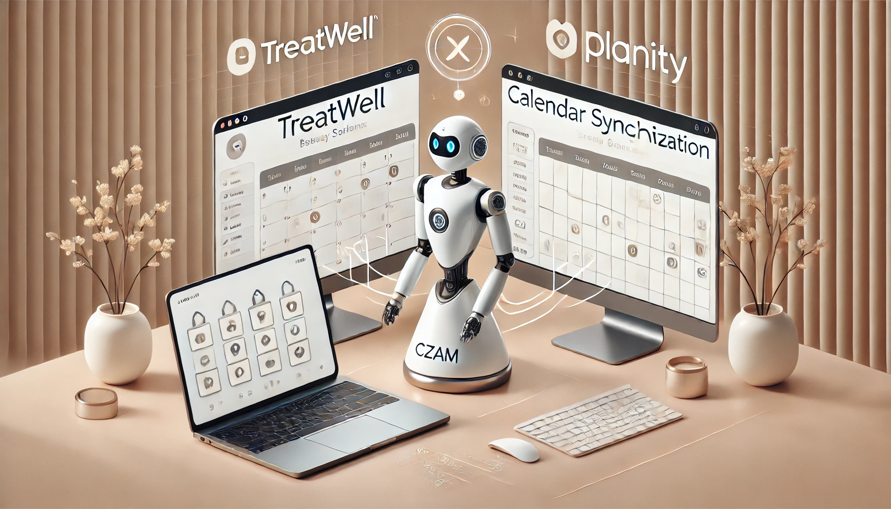

Démarche avec CZAM

📢 Merci de votre intérêt pour CZAM !
Nous sommes ravis que notre solution vous intéresse. Voici comment l’intégrer en toute simplicité.
🔗 Accès à Treatwell et Planity
Pour que CZAM puisse synchroniser vos agendas, nous devons avoir la possibilité de consulter et enregistrer vos rendez-vous, comme le ferait un collaborateur.
Vous avez deux options pour nous donner accès :
1️⃣ Partage sécurisé de vos identifiants
- Nous recommandons d’utiliser https://scrt.link/fr pour partager vos accès de manière sécurisée.
- C'est la solution la plus rapide et simple.
2️⃣ Ajout de CZAM en tant que collaborateur
- Cette méthode garantit un accès distinct et indépendant.
- Suivez les étapes ci-dessous pour chaque plateforme.
📌 Étape 1 : Ajouter CZAM à Treatwell
- Connectez-vous à Treatwell Connect et cliquez sur l’onglet Équipe.
- Dans la colonne de navigation gauche, cliquez à nouveau sur Équipe.
- Cliquez sur Ajouter un membre d’équipe en bas de la page.
- Dans l’onglet Informations générales :
- Entrez un nom (ex. CZAM).
- ‼️ Email : Utilisez l’adresse que CZAM vous a communiquée.
- ‼️ Décochez "Prodigue prestations et soins".
- ‼️ Cochez "Accès Réceptionniste" ou "Accès Gérant".
- Cliquez sur Enregistrer.
CZAM recevra un email d’invitation et pourra alors synchroniser vos agendas. Cet accès est invisible pour vos clients.
📌 Étape 2 : Ajouter CZAM à Planity
Contrairement à Treatwell, Planity ne permet pas d’ajouter un collaborateur vous-même. Vous devez contacter leur support.
⚠️ Ne mentionnez pas la synchronisation des agendas lorsque vous faites la demande. Planity n’apprécie pas l’utilisation d’outils tiers comme Treatwell.
- 📞 Appelez Planity au 01 86 26 44 44 et demandez l’ajout d’un collaborateur avec un accès individuel.
- ✉️ Envoyez ensuite cet email à contact@planity.com :
Objet : Ajout d’une adresse e-mail pour l’accès à l’espace pro
Bonjour,
Suite à notre conversation téléphonique, je me permets de vous contacter afin de demander l’ajout d’une adresse e-mail pour accéder à notre espace professionnel sur Planity.
Voici les informations nécessaires :
Nom de l’établissement : [Nom de votre salon/entreprise]
Nouvelle adresse e-mail à ajouter : [Nouvelle adresse e-mail]
Merci de bien vouloir procéder à cette modification et de me tenir informé une fois l’ajout effectué.
Dans l’attente de votre retour, je vous remercie par avance pour votre aide.
Cordialement,
[Votre Nom]
[Votre Fonction]
[Votre Numéro de Téléphone]
[Nom de votre entreprise/salon]
Une fois l’email traité par Planity, CZAM recevra l’invitation et pourra commencer la synchronisation.
💳 Étape 3 : Paiement
Une fois les accès validés, CZAM vous enverra un lien de paiement récurrent.
La synchronisation débutera dès validation du paiement.
❓ FAQ - Questions fréquentes
Question : Est-ce sécurisé de partager mes accès avec CZAM ?
Réponse : Oui. CZAM est un robot qui ne peut ni interagir avec des humains ni compromettre vos données. En plus, tous les accès sont chiffrés et ne sont jamais partagés avec des tiers.
Question : CZAM a-t-il accès à mes fiches clients ?
Réponse : Oui, mais uniquement parce que Treatwell et Planity ne permettent pas de restreindre davantage les droits d’accès. CZAM n’utilise vos données que pour synchroniser vos rendez-vous.
Question : Puis-je suspendre mon abonnement temporairement ?
Réponse : Oui ! CZAM fonctionne sans engagement. Vous pouvez faire une pause ou résilier à tout moment. Envoyez un email à contact@czam.io et nous traiterons votre demande sous 48h.